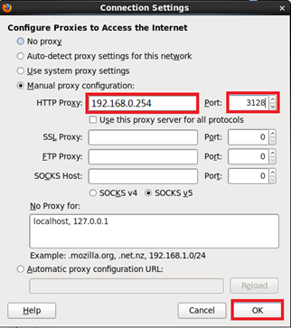

1 什么是运维
参考答案
运行 & 维护，Operation & Maintance
IT运维、业务运维、日常管理运维
采用相关的方法、手段、技术、制度、流程和文档等，对IT运行环境、IT业务系统和IT运维人员进行的综合管理。
2 代理软件的功能
参考答案
Web访问加速（正/反向）；
IP伪装、“翻墙”。
3 配置Squid传统正向代理
Squid内网IP地址为192.168.0.254，Squid公网IP地址为172.16.0.1。
要求：内网192.168.0.0/24网络的所有主机都可以通过Squid服务器代理访问外部网络。
参考答案
第一步：yum安装Squid软件
[root@squid ~]# yum –y install squid
第二步：修改Squid配置文件
[root@squid ~]# vim /etc/squid/squid.conf .. .. http_port 3128 visible_hostname localhost.localdomain cache_dir ufs /var/spool/squid 100 16 256 http_access allow all
第三步：启动服务并查看端口状态
[root@squid ~]# service squid start ; chkconfig squid on [root@squid ~]# netstat -anptu | grep 3128 tcp 0 0 :::3128 :::* LISTEN 1211/(squid)
第四步：客户端设置Firefox，添加代理服务器
以Firefox浏览器为例，在命令行输入firefox打开火狐浏览器，点击“Edit（编辑)”菜单，选择“Preferences（属性）”，如图-1所示。

图-1
随后再点击“Advanced（高级）“选项卡，找到”Network（网络）“选项卡，点击”Settings（设置）“按钮，如图-2所示。

图-2
点选”Manual Proxy Configuration“，在HTTP Proxy后输入代理服务器IP地址：192.168.0.254，并在Port后输入3128端口号信息，如图-3所示。

图-3
第五步：客户端访问外部服务器测试
[root@client ~]# firefox http://www.baidu.com/
4 在括号内写出定义ACL时类型匹配的数据
- src （ ）
- dst （ ）
- port （ ）
- time （ ）
- maxconn （ ）
- url_regex （ ）
- dstdomain （ ）
- urlpath_regex （ ）
参考答案
- src：源地址
- dst：目标地址
- port：目标端口
- dstdomain：目标域
- time：访问时间
- maxconn：最大并发连接
- url_regex：目标url地址
- urlpath_regex：整个目标url路径
5 Varnish相比Squid有哪些优势
参考答案
Varnish是一款高性能且开源的反向代理服务器和http加速器。
与传统的Squid相比，Varnish具有性能更高、速度更快、管理更方便等诸多优点